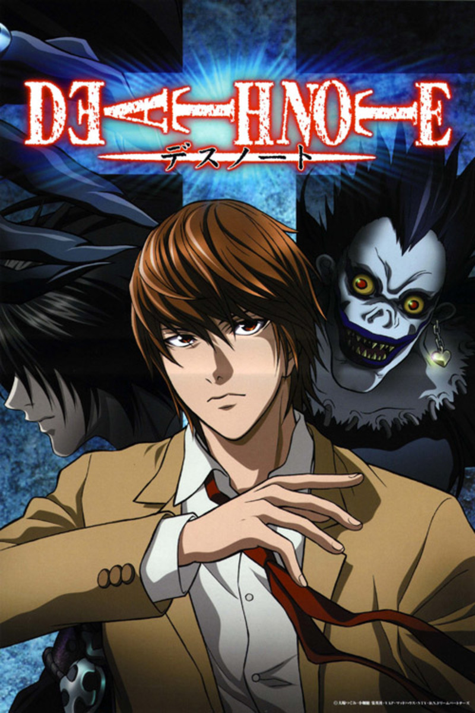
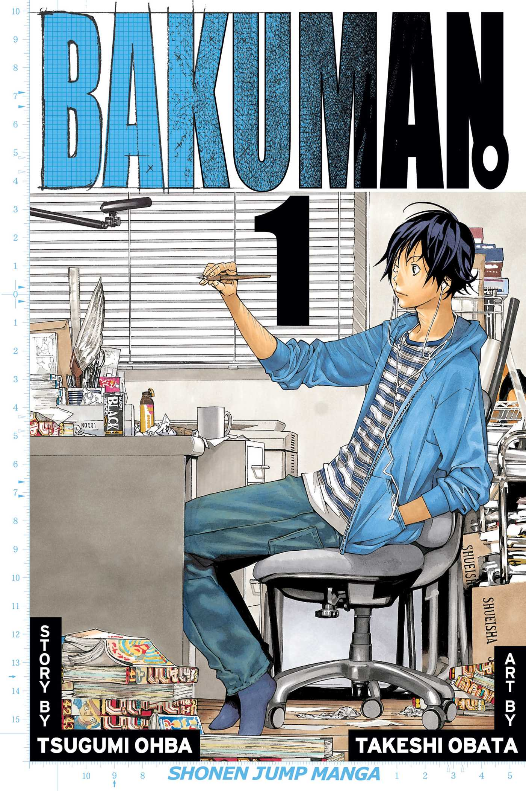
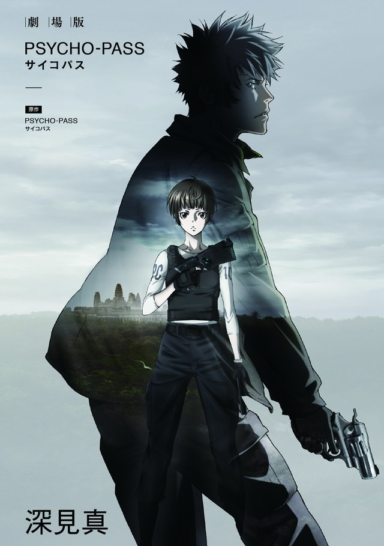
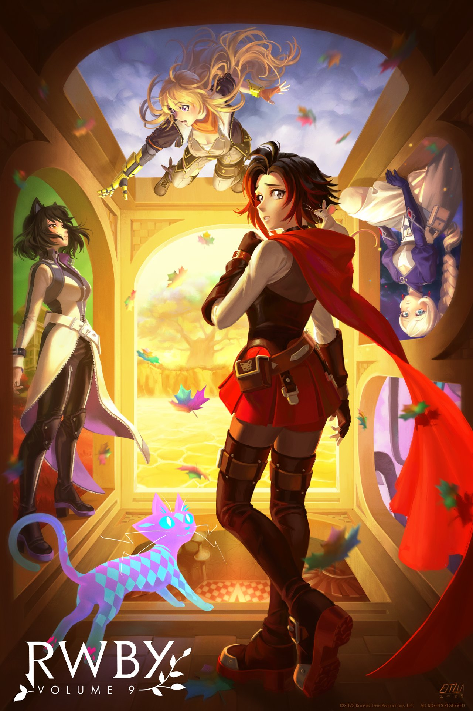
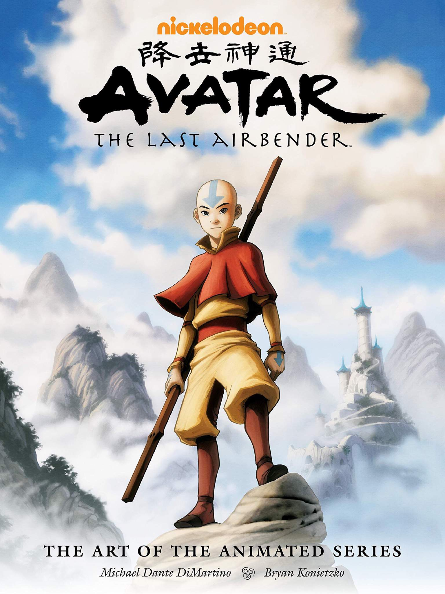
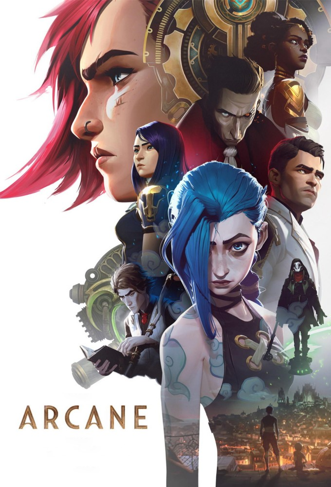
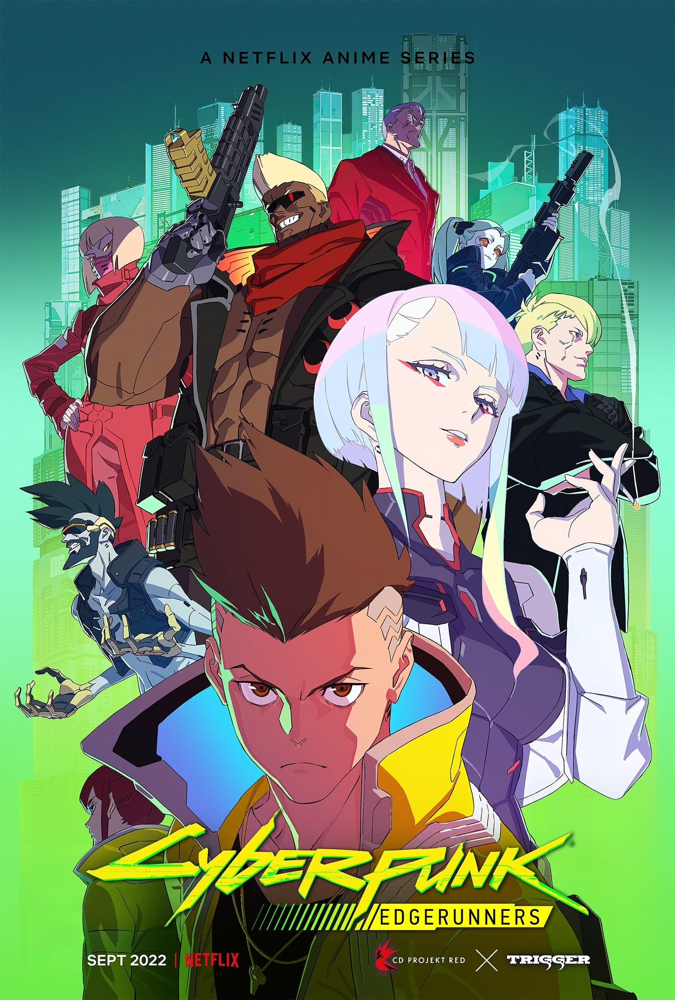
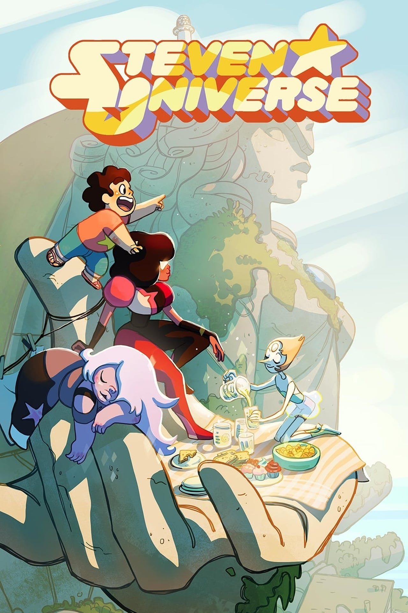
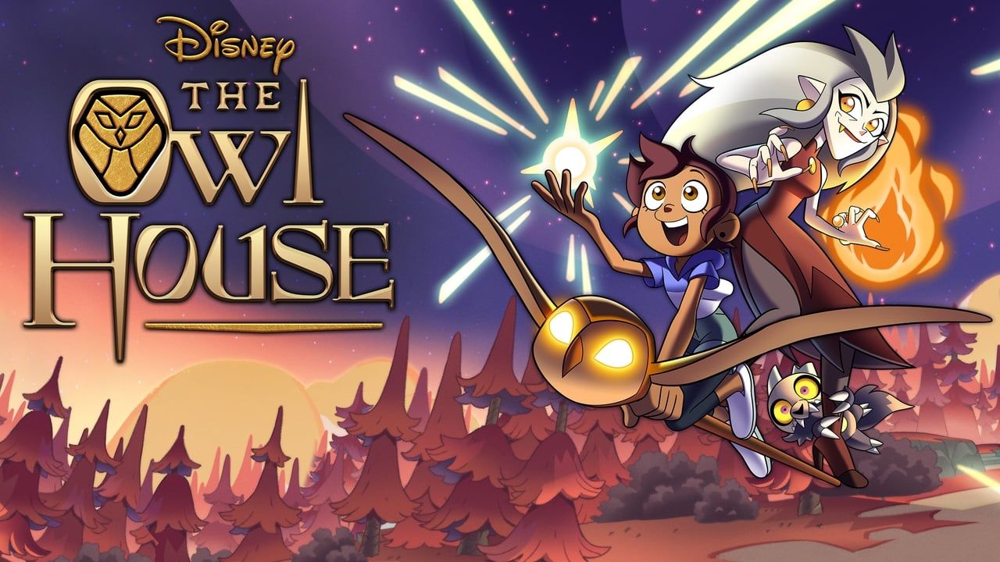

The magic of animation
As any other kid I grew up watching cartoons
And of course, it sparked an interest for animation as a whole
Arguably my most long lasting hobby, as I still do it today
I would watch any random cartoons on TV, following certain series the best I could. Looking back, it actually made me have a sort of a schedule so I wouldn't miss anything :D
Then someone showed me what anime was, japanese "cartoons". Turned out these cartoons would cover a way wider age range and themes
To name some of my favorites:
-
Naruto - a fantasy setting

-
Death Note - a thriller with a fantasy element

-
Bakuman - a so called "slice of life", a novel about manga creators
and life

-
Psycho Pass - a sci-fi dystopia

The list goes on and like I said, the range and variety of themes was amazing. So it grew up with me up until recent years
Animation's expressiveness
There's something so unique about animation that in my opinion can't be achieved with anything else. The expresiveness, the HUGE variety of artstyles, from more "cartoonish" to more realistic, the impossible movements, etc.
Nowadays I look more into Western and 3D animation, a whole new and different perspective for me from Japanese anime
And some of my favorite shows I've discovered:
-
RWBY

-
Avatar The Last Airbender

Which I didn't discover recently, but has been with me for a long long time. On the surface made for kids, yet exploring so many themes about our world and nature, regarded as one of the best pieces of animation ever made
Every time I watch it as I grow older, there's a new perspective to it :O
-
Arcane

-
Cyberpunk: Edgerunners

Technically Japanese, based on the Polish videogame Cyberpunk 2077, it mixes the two styles in a way
And I've also kinda gotten back to some modern cartoons as an adult :D
-
Steven Universe

-
The Owl House
